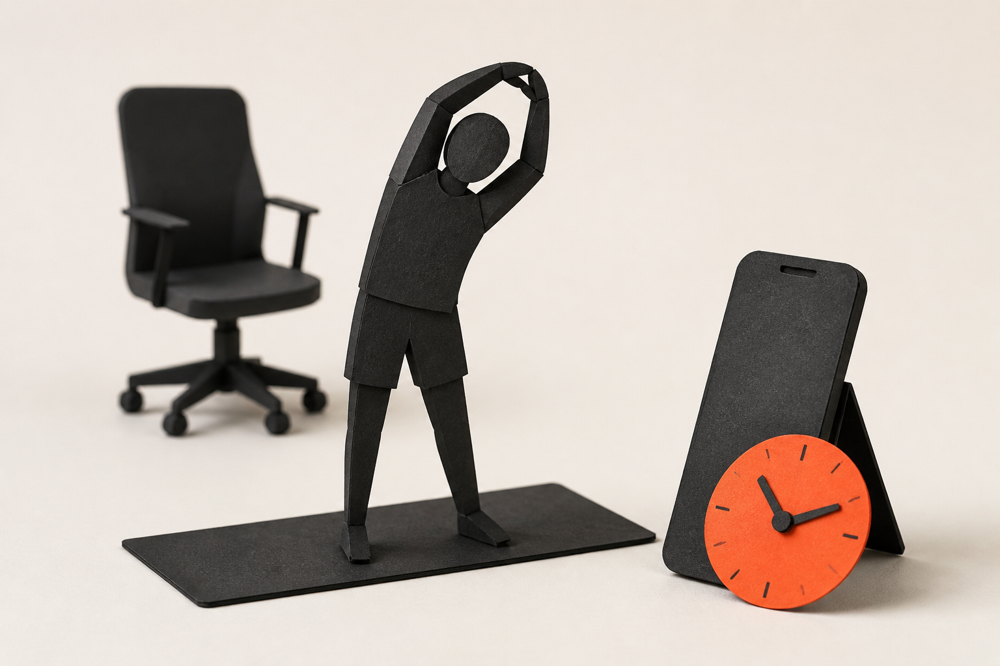
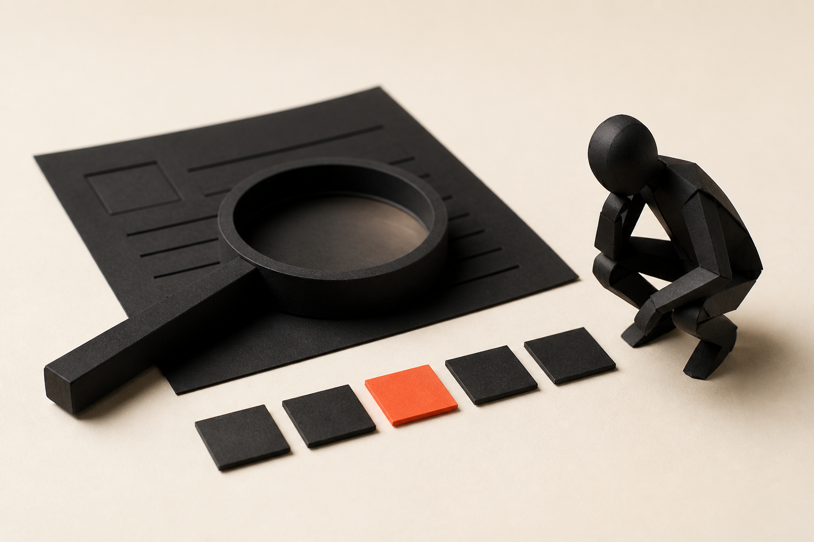

오프닝 전 대기 화면. 시작 시 "오늘은 광고 문구 쓰는 법을 배우지 않는다"로 진입. 참여 인원 약 150명 — 채팅·투표·Padlet 중심 운영 리마인드.
01오프닝
오늘 우리는 카피를 배우지 않습니다.
이 수업은 AI에게 카피를 대신 쓰게 하는 수업이 아니라, 고객의 상황·언어·가치·증거를 찾아 ‘팔리는 결’로 압축하고 여러 콘텐츠 대안을 빠르게 검증하는 실습형 수업입니다.
이 수업의 ‘팔리는’은 매출 예측이나 성과 보장을 뜻하지 않습니다. 고객 신호에 근거한 콘텐츠 가설을 만들고 검토하는 방법을 뜻합니다.
멘트: "오늘은 AI에게 '광고 문구 써줘'라고 말하는 법을 배우지 않습니다. 고객이 실제로 반응할 가능성이 높은 결을 먼저 찾고, AI를 대안 생성과 비교에 쓰는 방법을 연습합니다."
02오프닝
120분 뒤 가져갈 결과물.
Deliverable 01
한 문장 콘텐츠 브리프 1개
Deliverable 02
서로 다른 훅 3개
Deliverable 03
선택한 콘텐츠 초안 1개
Deliverable 04
수정 근거가 적힌 검증표 1개
채팅 참여 — 오늘 다뤄보고 싶은 대상을 한 단어로: 제품 / 서비스 / 사내 캠페인 / 개인 프로젝트 / 아직 없음
채팅 답변은 한 단어로 제한. 답변 분포를 빠르게 읽고 "제품이 많네요 — TENMIND 예시가 그대로 적용됩니다"처럼 연결.
03오프닝 · 안전
오늘의 도구 세 가지.
개인 실습 권장
ChatGPT
유료 기능 없이 참여 가능
접속 불가 시 강사 데모 관찰
강사 데모 선택
Google Trends
상대적 관심 변화 탐색
수강생 개별 접속 불필요
운영사 제공
Padlet + Zoom
일반화한 결과물 공유
회차별 링크 수신 후 사용
다른 AI를 써도 됩니다 — 오늘의 프롬프트는 특정 도구에 종속되지 않습니다. 조직에서 승인된 생성형 AI가 있다면 동일하게 실습할 수 있습니다.
AI는 같은 프롬프트라도 실행마다 결과가 다름을 여기서 미리 예고 — "제 화면과 여러분 결과가 달라도 정상입니다."
03오프닝 · 안전
모든 외부 입력창에 넣지 않는 것.
고객·임직원 개인정보
미공개 사업계획, 매출, 원가, 계약 내용
사내 한정 문서 원문
외부 공개 권한이 불분명한 자료
실명·팀명·미공개 제품명 등 식별 가능 정보
적용 범위: CHATGPT · GOOGLE TRENDS · PADLET · ZOOM 채팅 전부
사용해도 되는 것
공개 정보
직접 만든 예시
익명화·일반화한 정보
접속 불가 시
강사 데모 + 제공된 가상 사례로 참여
공유가 불편하면 개인 메모에만 작성
멘트: "실습에서는 공개 정보, 직접 만든 예시, 익명화·일반화한 정보만 사용합니다. 확신이 없으면 실제 데이터를 넣지 않고 구조만 연습합니다." 조직 보안 정책이 있으면 그 기준이 우선.
04문제 정의
AI가 콘텐츠를 못 쓰는 것이 아닙니다.
AI는 문장을 잘 만듭니다. 문제는 무엇을 근거로, 누구에게, 왜 말하는지 모른다는 것입니다.
입력
예상 결과
“우리 앱 광고 문구 써줘”
무난하고 교체 가능한 문장
고객 상황 · 실제 표현 · 가치 · 증거 제공
대상과 맥락이 보이는 문장
핵심 메시지: 좋은 입력 근거가 좋은 콘텐츠보다 먼저다. AI는 고객을 대신 알지 못한다.
PART 1 · 12:08–12:25
‘잘 쓴 콘텐츠’와 ‘팔리는 결’은 다르다.
화려한 문장과 구체적인 문장을 구분하는 것에서 시작합니다.
FIG.01 — 화려함과 구체성은 같지 않다
사례 비교 투표 구간 시작. Zoom 투표(사전 등록) 또는 채팅 A/B로 진행.
05Part 1
어느 쪽이 ‘자기 이야기’로 들리는가.
A
바쁜 일상에 새로운 활력을 더하는 스마트한 선택
B
하루 종일 앉아 있던 날, 잠들기 전 10분만 따라 하세요.
어떤 문장이 누구의 어떤 순간을 더 선명하게 보여주는가?
더 화려한 문장과 더 구체적인 문장은 같은가?
팔리는 결은 문장 기술이 아니라 상황의 해상도에서 시작합니다.
투표 — A vs B, 이유를 채팅에 한 줄로
B의 오렌지 보더는 정답 공개 후 화면 전환 시점에 언급. 투표 전에는 "정답이 정해진 건 아니다"로 시작해 참여 부담을 낮춘다.
06Part 1
‘팔리는 결’의 정의.
고객이 필요를 느끼는 순간과 고객이 사용하는 말, 기대하는 변화, 믿을 이유가 한 방향으로 맞물린 상태
① 상황결
언제 필요해지는가
② 언어결
고객은 그것을 어떻게 말하는가
③ 가치결
무엇이 달라지는가
④ 증거결
왜 믿을 수 있는가
4축 색·아이콘은 이후 슬라이드에서 고정 반복 — 상황결=시간·장면, 언어결=말풍선, 가치결=변화 화살표, 증거결=체크·문서.
PART 2 · 12:25–12:42
팔리는 결 네 개의 축.
상황 · 언어 · 가치 · 증거 — 네 층의 결이 한 방향으로 맞을 때 콘텐츠가 움직입니다.
FIG.02 — 네 층의 결이 같은 방향을 향한다
미니 진단 구간. 각 축 슬라이드는 질문 → 나쁜 예/개선 예 → 원칙 순서.
07Part 2 · 4축
① 상황결 — 언제 필요해지는가.
고객은 언제 이 문제를 가장 크게 느끼는가?
구매 직전에는 어떤 사건이 있었는가?
시간, 장소, 역할, 감정 중 무엇이 방아쇠가 되는가?
나쁜 예
운동이 필요한 직장인
개선 예
하루 종일 회의와 이동으로 몸이 굳었지만 헬스장에 갈 에너지는 남지 않은 평일 밤의 직장인
대상이 넓으면 상황을 좁힌다 — 이후 피드백에서도 반복되는 1번 규칙.
08Part 2 · 4축
② 언어결 — 고객은 어떻게 말하는가.
고객은 실제로 어떤 단어와 문장으로 불편을 표현하는가?
업계 용어와 고객의 말은 어떻게 다른가?
반복되는 표현은 무엇인가?
원칙
고객의 말을 고급스럽게 번역하기 전에 보존한다
감탄사보다 동사와 상황 표현을 찾는다
한두 개의 강한 표현을 전체 고객의 의견으로 확대하지 않는다
브랜드의 말 — “저강도 데일리 웰니스 루틴”
고객의 말 — “30분짜리는 시작하기도 전에 포기해요.”
브랜드 혼잣말 vs 고객의 말 대비를 소리 내서 읽어주면 효과가 큼.
09Part 2 · 4축
③ 가치결 — 기능을 변화로 번역한다.
기능
즉시 변화
생활·업무 변화
10분 루틴
짧게 실행 가능
포기하지 않고 반복 가능
자동 요약
읽는 시간 감소
회의 후 다음 행동이 빨라짐
템플릿 제공
처음부터 만들 필요 없음
시작 장벽이 낮아짐
기능이 있다→그래서 지금 무엇이 쉬워진다→결국 어떤 상태에 가까워진다
"기능을 제거하고 나면 어떤 변화가 남는가?"를 질문으로 던져도 좋음.
10Part 2 · 4축
④ 증거결 — 왜 믿을 수 있는가.
증거의 예
실제 사용 장면
전후 비교
과정 공개
수치와 출처
사용자 후기
제한 조건의 솔직한 명시
주의
AI가 만든 수치, 후기, 인용문은 증거가 아닙니다.
확인되지 않은 내용은 반드시 '확인 필요'로 남깁니다.
환각(할루시네이션) 개념을 여기서 실무 언어로 처리 — "AI는 빈칸을 그럴듯한 추측으로 채운다."
11Part 2 · 미니 진단
지금 내 콘텐츠, 어느 축이 비었는가.
축
확인 질문
없을 때 생기는 문제
상황결
언제 필요한가?
타깃이 지나치게 넓어짐
언어결
고객은 뭐라고 말하는가?
브랜드 혼잣말이 됨
가치결
무엇이 달라지는가?
기능 나열로 끝남
증거결
왜 믿어야 하는가?
과장처럼 보임
미니 진단 — 가장 비어 있는 축을 채팅에: 상황 / 언어 / 가치 / 증거
Zoom 투표 사전 등록분 사용 가능. 분포를 읽고 "증거가 제일 많네요 — Demo에서 증거결 비워두는 법을 보여드리겠습니다"처럼 연결.
DEMO 1 · 12:42–13:02
고객 신호에서 브리프까지.
발견 → 압축 → 생성 → 검증 → 선택. 생성부터 시작하지 않습니다.
FIG.03 — 다섯 단계를 통과해야 카드가 완성된다
라이브 데모 시작. 데모 순서: 입력 먼저 보여주기 → 실행 전 예상 말하기 → 결과-근거 대응 표시 → 추측·상투어 찾기 → 수정 과정 공개. AI 응답이 느리면 기다리지 말고 사전 캡처로 전환.
12Demo 1
AI 콘텐츠 워크플로.
발견→압축→생성→검증→선택
01발견 — 공개 가능한 고객 신호를 모은다
02압축 — 반복되는 상황·언어·가치·증거를 구조화한다
03생성 — 서로 다른 가설을 가진 콘텐츠 대안을 만든다
04검증 — 기준표로 약점과 과장을 찾는다
05선택 — 사람이 맥락과 책임을 갖고 수정·채택한다
멘트: "생성부터 시작하면 AI가 빈칸을 상투어와 추측으로 채웁니다. 오늘은 발견과 압축에 시간을 더 씁니다." 생성과 검증을 한 프롬프트에 섞지 않는다.
13Demo 1 · 발견
신호를 어디서 찾는가.
공개 후기와 댓글
고객 문의에서 익명화한 반복 질문
검색어와 Google Trends의 상대적 관심 변화
영업·상담 담당자가 반복해서 듣는 표현
경쟁 콘텐츠의 제목, 형식, 댓글 반응
자신의 실제 사용·업무 관찰
신호 ≠ 사실
한 개의 댓글은 전체 시장의 사실이 아니라 탐색할 가설입니다.
"고객 데이터가 없으면요?" 질문이 여기서 자주 나옴 — 공개 신호 + 가설/검증 분리로 답변.
14Demo 1 · 강사 데모
Google Trends는 정답지가 아닙니다.
볼 것
검색어 간 상대적 관심 비교
시기별 변화
지역별 차이
관련 검색어
보지 말아야 할 것
절대 검색량이라고 단정
관심 상승 = 구매 의도라는 해석
기간·지역·카테고리가 다른 비교
데모 — 서로 가까운 두 표현을 같은 기간·지역 조건에서 비교하고, 표현 선택의 가설만 만듭니다.
예시 검색어·기간·지역 조건은 사전 점검분 사용. 접속 불가 시 캡처 화면으로 전환.
15Demo 1 · 실습용 예시
가상 서비스 — TENMIND.
항목
내용
제품
퇴근 후 10분 스트레칭 루틴 앱
대상
장시간 앉아 일하지만 운동 계획이 자주 무너지는 직장인
확인된 것
상황별 10분 영상 · 별도 기구 불필요 · 무료 체험 7일 · 주간 기록
“퇴근하면 운동복으로 갈아입는 것부터 귀찮아요.”
“30분짜리는 시작하기도 전에 포기해요.”
“효과보다 매일 할 수 있는지가 더 중요해요.”

FIG.04 — 수업용 가상 예시 · 실제 후기·성과 아님
가상 고객 표현 6종 전체는 사전 학습자료 6장에 있음 — "사전자료 받은 그 예시 그대로"라고 연결. 다룰 제품이 없는 수강생의 대체 과제.
16Demo 1 · 입력
AI에 넣기 전, 입력부터 정리.
제품 — 확인된 사실만
대상 — 일반화한 표현
기능·조건 — 공개 가능한 것만
고객 표현 — 원문 보존
금지 조항을 입력에 포함
INPUT — 데모 화면에 먼저 보여줄 것
[제품] 퇴근 후 10분 스트레칭 루틴 앱 TENMIND
[대상] 장시간 앉아서 일하지만 운동 계획이 자주 무너지는 직장인
[확인된 기능/조건]
- 상황별 10분 영상 / 별도 기구 불필요
- 무료 체험 7일 / 주간 실천 기록
[고객 표현]
- 퇴근하면 운동복으로 갈아입는 것부터 귀찮다
- 30분짜리는 시작하기도 전에 포기한다
- 누워서 폰 보기 전에 짧게 하고 싶다
- 효과보다 매일 할 수 있는지가 중요하다
[금지] 제공하지 않은 수치, 후기, 의학적 효과를 만들지 않는다.
데모 원칙: 입력 자료를 먼저 화면에 보여준다. 실행 전에 예상되는 좋은 출력과 위험을 말한다.
17Demo 1 · Prompt 1
Prompt 1 — 고객 신호 분류.
데모 포인트
유창함보다 입력↔출력 대응을 확인
근거 없는 증거결은 빈칸으로 남겨도 된다
PROMPT 01 — SIGNAL ANALYSIS
당신은 콘텐츠 전략가다. 아래 입력만 근거로 고객 신호를 분석하라.
1. 신호를 상황결·언어결·가치결·증거결로 분류한다.
2. 반복되는 패턴과 서로 충돌하는 신호를 구분한다.
3. 입력에 없는 사실은 추측하지 말고 '근거 부족'이라고 표시한다.
4. 각 분류에서 콘텐츠로 발전시킬 가설을 1개씩 제안한다.
출력 형식: 4축 분석 표 / 핵심 패턴 3개 / 근거 부족 항목 /
탐색할 다음 질문 3개
[입력] 여기에 정리한 제품·대상·기능·고객 표현을 붙여 넣는다.
결과에서 입력 근거와 연결되는 부분을 마우스로 짚어가며 표시. 추측·상투어·과장을 같이 찾는다.
18Demo 1 · Prompt 2
Prompt 2 — 한 문장 콘텐츠 브리프.
브리프 구조
[구체적 상황]의 [대상]에게, [고객의 언어]로 말을 걸어, [기대하는 변화]를 제안하고, [확인된 증거]로 신뢰를 만든다
PROMPT 02 — ONE-LINE BRIEF
앞의 분석을 바탕으로 콘텐츠 브리프를 작성하라.
문장 구조:
'[구체적 상황]에 있는 [대상]에게, [고객의 언어]로 말을 걸어,
[기능이 아니라 기대하는 변화]를 제안하고, [확인된 증거]로
신뢰를 만든다.'
조건:
- 추상어보다 시간·행동·상황을 쓴다.
- '혁신적, 스마트한, 특별한, 최고의' 같은 상투어 금지.
- 증거가 없으면 임의로 만들지 말고 '[증거 보완 필요]'로 남긴다.
- 서로 다른 관점의 브리프 3개를 제시한다.
브리프 3개가 나오면 — "3개를 만든 이유는 비교 비용을 낮추기 위해서"를 명시. AI의 강점은 대안 넓히기.
19Demo 1
좋은 브리프의 조건.
퇴근 후 운동을 시작할 에너지가 남지 않은 직장인에게 “30분은 시작하기도 전에 포기한다”는 언어로 말을 걸어, 운동 계획을 세우는 대신 잠들기 전 10분을 반복하는 변화를 제안하고, 별도 기구 없이 상황별 영상을 따라 할 수 있다는 사실로 신뢰를 만든다.
장면이 보이는가?
고객이 자기 이야기라고 느낄 표현이 있는가?
기능이 변화로 번역됐는가?
증거가 실제 입력에 존재하는가?
4개 질문에 예시 브리프를 하나씩 통과시키며 검증하는 시범을 보여줄 것.
2013:02–13:17
실습 1 — 나의 브리프 만들기개인 실습⏱ 15:00
3분대상과 필요 순간을 한 문장으로 적는다
3분실제 또는 가상 고객 표현 3개를 적는다
2분확인된 기능·조건·증거만 적는다
5분Prompt 1 → Prompt 2 실행
2분가장 나은 브리프를 직접 한 번 수정한다
Padlet 공유 형식
대상(일반화) / 상황
선택한 브리프
아직 부족한 축
공개 가능 여부 확인: 예
민감정보 제거 확인: 예
실명·팀명·미공개 제품명 금지 · 제품이 없으면 TENMIND 사용
타이머와 제출 형식을 화면에 고정. 개인 업무 정보 노출 발견 시 즉시 일반화 예시로 바꾸도록 안내. 공유가 불편하면 개인 메모만으로 OK.
2113:17–13:20 · 공유
무엇이 달라졌는가.
제품 설명에서 고객 상황으로 이동했는가?
AI가 새 사실을 만들었는가?
브리프를 3개 만든 것이 선택에 도움이 됐는가?
강사 피드백 규칙
문장 표현보다 먼저 비어 있는 축을 찾는다
대상이 넓으면 상황을 좁힌다
가치가 기능 반복이면 “그래서 무엇이 달라지는가?”를 다시 묻는다
전체 게시물 중 구조가 다른 2~3개만 선택해 피드백. 시간 압박 시 이 구간을 실습 2 이후로 통합.
DEMO 2 · 13:25–13:42
훅 변주와 본문 생성.
같은 말을 다섯 번 바꾸는 것이 아니라, 서로 다른 진입 가설을 만듭니다.
FIG.05 — 서로 다른 각도의 진입 가설
리셋 Q&A(13:20–13:25) 후 진입. 시간 압박 시 훅 3유형 중 장면형 1개만 라이브 시연, 나머지는 결과 화면.
22Demo 2
훅은 제목이 아니라 진입 가설이다.
01 장면형
특정 순간을 보여준다
02 문제 재정의형
익숙한 문제를 다르게 해석한다
03 대비형
기존 행동과 새 행동을 비교한다
04 증거형
확인된 과정·수치·사례로 시작한다
05 질문형
대상이 이미 하고 있는 고민을 묻는다
같은 말을 다섯 문장으로 바꾸지 말고, 서로 다른 가설을 만든다.
각 유형이 겨냥하는 고객 신호가 다르다는 점을 TENMIND로 즉석 예시.
23Demo 2 · Prompt 3
Prompt 3 — 훅 3개 변주.
조건 요약
장면형 · 문제 재정의형 · 질문형 각 1개
훅마다 겨냥한 신호 + 기대 반응 명시
근거 밖 수치·후기·성과 금지
공포·과장·낚시 금지, 70자 이내
PROMPT 03 — HOOK VARIATIONS
아래 콘텐츠 브리프를 바탕으로 서로 다른 진입 가설을 가진
훅 3개를 만든다.
훅 유형: 1. 장면형 2. 문제 재정의형 3. 질문형
각 유형별로 1개씩 작성하고, 각 훅 아래에 한 줄로 설명하라.
- 겨냥한 고객 신호 / 기대하는 반응
조건:
- 제공된 근거 밖의 수치·후기·성과를 만들지 않는다.
- 공포, 과장, 낚시성 표현을 쓰지 않는다.
- 각 훅은 70자 이내로 쓴다.
[콘텐츠 브리프] 여기에 선택한 브리프를 붙여 넣는다.
훅 아래 "겨냥한 신호" 설명이 비어 있거나 동어반복이면 그 훅은 가설이 아니라 장식 — 라이브에서 짚기.
24Demo 2 · Prompt 4
Prompt 4 — 채널별 본문 생성.
본문 구조
훅 → 고객 상황 → 문제 재정의 → 제안하는 변화 → 확인된 근거 → 하나의 CTA
채널·목표 행동을 반드시 지정
PROMPT 04 — CHANNEL DRAFT
선택한 훅과 콘텐츠 브리프를 바탕으로 초안을 작성하라.
채널: [사내 게시글 / 링크드인 / 블로그 / 이메일 / 숏폼 대본]
목표 행동: [읽기 / 댓글 / 신청 / 체험 / 문의 중 선택]
톤: 명확하고 구체적이며 과장하지 않는다.
구조: 1.훅 2.고객 상황 3.문제의 재정의 4.제안하는 변화
5.확인된 근거 6.하나의 CTA
추가 조건:
- 문단마다 한 가지 역할만 갖는다.
- 입력에 없는 주장은 '[확인 필요]'로 표시한다.
- 300자 이내의 짧은 초안 1개만 제시한다.
300자 제한은 검증 시간을 지키기 위한 장치 — "짧게 만들어야 빨리 비교한다."
25검증
생성과 검증을 분리한다.
생성 모드
대안을 넓힌다
관점과 형식을 바꾼다
판단을 유보한다
검증 모드
근거를 추적한다
과장과 상투어를 제거한다
대상·상황·행동을 선명하게 만든다
같은 대화창에서 검증하더라도 “좋게 고쳐줘”가 아니라 기준과 감점 사유를 명시해야 합니다.
핵심 메시지 반복: 생성과 검증을 한 프롬프트에 섞지 않는다.
26검증
25점 검증 루브릭.
기준
1점
3점
5점
고객 언어 적합성
브랜드 중심 표현
일부 고객 표현 반영
고객의 실제 말과 맥락이 핵심
상황 구체성
대상만 있음
문제 상황이 있음
시간·행동·방아쇠가 보임
가치 명료성
기능 나열
이점이 설명됨
기대 변화가 구체적임
증거 정직성
근거 없는 주장
일부 확인 가능
주장과 근거가 정확히 연결됨
행동 유도성
CTA 없음·다수
행동은 있으나 모호
하나의 자연스러운 다음 행동
점수는 성과 예측·매출 보장 모델이 아니라, 여러 초안을 같은 기준으로 비교하기 위한 내부 도구
"AI 점수를 믿어도 되나요?" — 점수는 예측값이 아니라 수정 이유를 언어화하는 보조 장치.
27검증 · Prompt 5
Prompt 5 — 비판적 검토.
역할 전환
AI를 카피라이터가 아니라 검토자로 다시 세운다.
총점만으로 좋고 나쁨을 단정하지 않고, 입력 근거와 초안을 대조한다.
PROMPT 05 — CRITICAL REVIEW
당신은 카피라이터가 아니라 검토자다.
아래 초안을 5개 기준으로 각각 1~5점 평가하라.
기준: 고객 언어 적합성 / 상황 구체성 / 가치 명료성 /
증거 정직성 / 행동 유도성
출력:
1. 점수표 2. 각 점수의 근거가 되는 원문 구절
3. 근거 없이 추가된 주장 4. 상투어 또는 삭제 가능한 문장
5. 가장 영향이 큰 수정 3개 6. 수정본
주의: 총점만으로 단정하지 않는다. 입력 근거와 초안을
대조한다. 사실 확인이 안 되면 '확인 필요'로 표시한다.
[입력 근거] 제품·대상·기능·고객 표현
[초안] 검토할 콘텐츠
수정본을 그대로 쓰지 않고 사람이 한 문장을 직접 고치는 것까지가 검증 단계의 완성.
28선택
사람이 마지막에 결정할 것.
이 콘텐츠를 지금 말해도 되는가?
이 표현은 실제 고객과 브랜드 관계에 맞는가?
공개 근거로 뒷받침할 수 있는가?
오해·차별·불필요한 불안을 만들지 않는가?
CTA 이후의 경험까지 약속과 일치하는가?
AI는 선택지를 만들지만, 맥락과 책임은 사람이 가진다.

FIG.06 — 마지막 검토는 사람의 몫
"AI 콘텐츠 그대로 게시해도 되나요?" 질문 대비 — 조직 AI 고지 정책 확인 + 게시 책임은 사람.
2913:42–13:55
실습 2 — 훅 3개에서 검증된 초안 1개까지개인 실습⏱ 13:00
2분Prompt 3으로 훅 3개 생성
1분가장 가능성 있는 훅 1개 선택
3분Prompt 4로 300자 이내 초안 1개
4분Prompt 5로 한 번 검증
2분AI 수정본을 그대로 쓰지 않고 직접 한 문장 수정
1분공개 가능한 경우에만 Padlet 공유
Padlet 공유 형식
선택한 훅
가장 낮은 점수 항목
사람이 직접 고친 문장
공개 가능 여부 확인: 예
민감정보 제거 확인: 예
타이머 13분 화면 고정. 사용량 제한에 걸린 수강생은 강사 데모 결과로 검증 단계만 따라가도 됨.
30공유 · 피드백
결과물 피드백의 순서.
01어떤 고객 신호를 겨냥했는지 확인
02네 축 중 강한 축과 약한 축을 말한다
03근거 없는 주장을 표시한다
04한 번에 가장 중요한 수정 하나만 제안
피해야 할 피드백
“좋아요”, “더 감성적으로”처럼 기준 없는 평가
취향만으로 톤을 바꾸는 제안
고객 신호보다 문장 장식을 먼저 고치는 것
시간 압박 시 이 슬라이드는 구두 설명으로 대체 가능.
31정리
실무용 한 장 체크리스트.
발견
모든 입력창에 넣어도 되는 공개 정보인가?
실명·팀명·내부 수치를 제거했는가?
한두 사례를 시장 전체로 확대하지 않았는가?
압축
상황·언어·가치·증거를 구분했는가?
근거 부족 항목을 비워 두었는가?
생성
서로 다른 가설의 대안을 만들었는가?
채널과 목표 행동을 지정했는가?
검증
입력 근거와 결과를 대조했는가?
과장·상투어·가짜 수치를 제거했는가?
선택
사람이 최종 문장과 공개 책임을 검토했는가?
하나의 다음 행동이 선명한가?
전체 체크리스트는 사전 학습자료·강사 교안 md에 수록 — "자료로 다시 드립니다"라고 안내.
32정리
내일부터 반복할 15분 루틴.
신호 5개 수집 3분→네 축 분류 3분→브리프 3개 3분→훅 5개 3분→선택·직접 수정 3분
AI를 잘 쓰는 사람은 긴 프롬프트를 외우는 사람이 아니라, 발견과 판단의 순서를 반복할 수 있는 사람입니다.
루틴은 사전자료 양식과 연결 — 확장 입력 양식을 메모장에 두고 매일 15분.
클로징 · 13:55–14:00
좋은 콘텐츠 가설 = 고객 신호 × 명확한 브리프 × 다양한 대안 × 사람의 검증.
24시간 액션
오늘 만든 브리프를 실제 콘텐츠 하나에 적용하고, 게시 전 네 축과 검증표를 다시 확인한다.